地政学
フランクフルトは首都ではありませんが、欧州中央銀行、連邦銀行、証券取引所、空港を通じ、通貨、資本、人の移動を結びます。ベルリン、ブリュッセル、ロンドン、チューリヒへ伸びる実務的な結節点になっています。

🇩🇪 ドイツ / ヨーロッパ / World City Atlas
マイン川沿いの高層金融街、欧州中央銀行、国際空港、見本市、出版と書籍文化、移民の生活圏が近距離で重なる、ドイツと欧州を接続する実務都市です。
都市の骨格
フランクフルトはドイツ最大級の金融拠点であると同時に、空港、鉄道、見本市、出版、移民街が都市の密度を作ります。歴史的な旧市街と高層ビル群の近さが、この街の現実感を際立たせます。
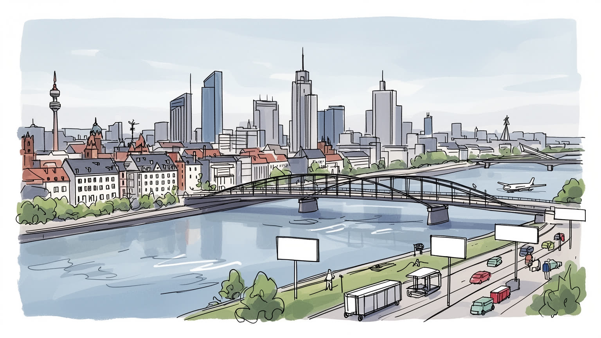
フランクフルトは首都ではありませんが、欧州中央銀行、連邦銀行、証券取引所、空港を通じ、通貨、資本、人の移動を結びます。ベルリン、ブリュッセル、ロンドン、チューリヒへ伸びる実務的な結節点になっています。
銀行、保険、法律、会計、空港物流、見本市、出版、ITが雇用を厚くします。一方で、清掃、警備、介護、飲食、配送、航空地上業務などの現場労働も都市を支え、所得差と住宅費の重さが日常に表れる構造である都市です。
書籍見本市、ゲーテの記憶、美術館岸、教会、シナゴーグ、モスク、移民の商店街が都市文化を形作ります。金融都市の硬い印象の下に、出版、言語、食、礼拝、祭りが重なる多宗教の生活圏が静かに息づいている都市です。
観光客は旧市庁舎、マイン川、美術館、金融街の眺望を巡りますが、住民には家賃、通勤、学校、保育、市場、買い物、空港騒音、移民支援が切実です。小さな市域の外へ広がる都市圏まで日々の生活が広く動いています。
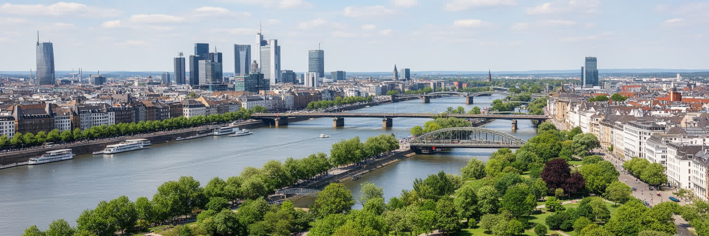
フランクフルトを読む最初の手がかりは、マイン川と橋です。北側には旧市街、銀行街、中央駅周辺の商業地が近く、南側には美術館岸、住宅地、ザクセンハウゼンのリンゴ酒酒場が広がります。雨上がりの川風は石畳と街路樹を湿らせ、朝はコーヒーとパンの匂い、夕方はソーセージとリンゴ酒の酸味が水辺へ流れます。週末にはランニング、自転車、蚤の市、博物館巡りが集まり、アイントラハト・フランクフルトの試合日にはユニフォーム姿の人が橋を渡ります。川は観光の背景であるだけでなく、住民が体を動かし、友人と待ち合わせ、子どもや高齢者が休む公共空間です。一方で河岸の価値が上がるほど住宅や店の価格も高まり、誰が水辺を日常的に使えるかが問われます。橋の上では金融街のガラス面、教会の塔、遊覧船、トラムの音が一度に入り、都市の時間が短い距離で切り替わります。昼休みにはスーツ姿の人が河岸でパンを食べ、夕方には犬を連れた住民と観光客が同じ遊歩道を歩きます。夏の夕立の後には水面が明るくなり、橋下の自転車ベル、スマホで共有される試合速報、紙カップの音までよく聞こえます。朝の川面には通勤前の静けさも残り、街が動き出す速度を感じられます。洪水対策や再開発、イベント時の混雑管理も川辺の論点です。マイン川は、交易都市の記憶、金融の富、余暇の楽しさ、都市政治の緊張を同じ風の中に映します。
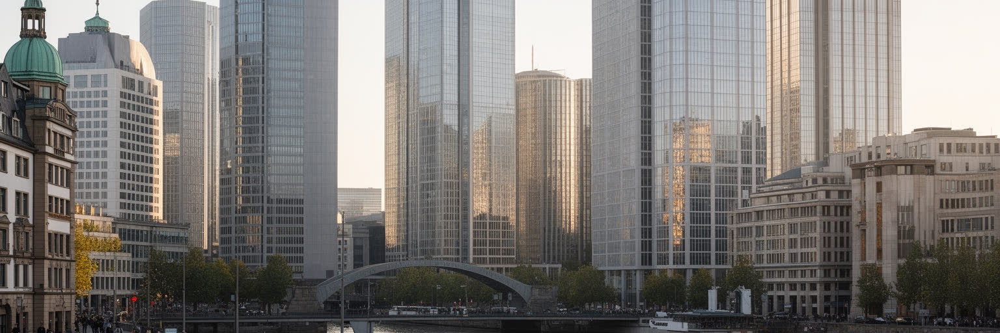
フランクフルトの名を世界へ押し出すのは、銀行と通貨の制度です。欧州中央銀行、ドイツ連邦銀行、証券取引所、大手銀行、保険、資産運用、法律、会計が集まり、ユーロ圏の金利、決済、監督、企業融資を支えます。高層ビル群は「マインハッタン」と呼ばれますが、朝の足元では清掃員、警備員、カフェの店員、IT保守、保育に向かう親、空港から戻る出張者が同じ歩道を使います。昼には銀行街のカウンターでエスプレッソとサンドイッチが急いで売れ、夕方にはトラムとSバーンの音がガラスの谷間に反響します。金融の成功は高収入職を生みますが、家賃を押し上げ、低賃金のサービス労働者や学生を中心部から遠ざけます。市場が揺れる日には記者会見の言葉がニュースになり、銀行員だけでなく住宅ローンを抱える家庭や小さな店にも関係してきます。駅前の花屋、昼食を作る食堂、夜に働く清掃会社まで、金融の時間割に合わせて売上や勤務が変わります。金融街から少し歩くと学生のカフェや移民の食堂があり、同じ昼休みでも使える金額は大きく違います。近くのパン屋の行列にも、職種ごとの昼休みの違いが表れます。地元紙やラジオは、ECBの政策だけでなく住宅、交通、駅前治安、空港騒音を日々伝えます。金融を読むには、会議室の数字と同時に、働く人が住み、食べ、移動できる都市の厚みを見る必要があります。
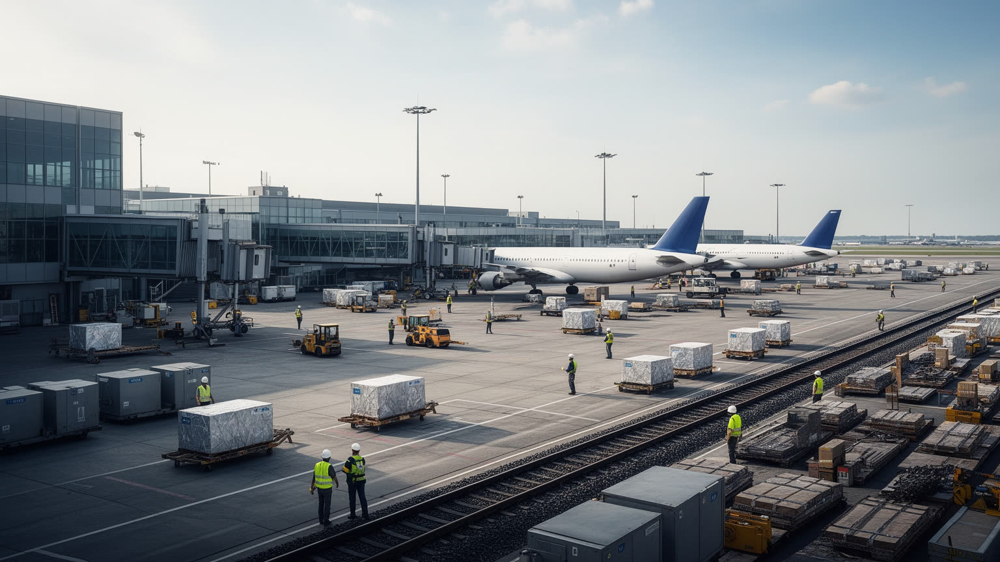
フランクフルト空港は、この都市の国際性を最も物理的に示します。長距離便、乗り継ぎ、貨物、空港駅、高速道路が一体となり、人、医薬品、機械部品、食品、郵便をドイツと世界へ動かします。Sバーンで中心へ戻ると、車内にはスーツケース、作業靴、展示会の名札、学生のリュックが混ざり、空港都市の時間割が見えます。空港は観光客や出張者の入口であるだけでなく、整備、ケータリング、保安、清掃、地上支援、ホテル、物流倉庫を抱える巨大な労働空間です。夜勤や早朝勤務の人にとって、トラムや郊外電車の接続、保育、住宅費は仕事の続けやすさに直結します。貨物が遅れれば見本市の設営、病院の物資、飲食店の仕入れにも影響し、空港の時計は街の奥まで届きます。到着ロビーのコーヒー、早朝のパン、深夜バスの待ち時間まで、空港の仕事は街の眠り方を変えます。休日の旅行者の高揚と、シフト帰りの疲れた表情が同じホームに並ぶ点も空港都市らしさです。出発案内の音は中央駅の乗換案内とつながり、街全体を一つの待合室のようにします。利便性は会議都市の地位を高めますが、騒音、排出、拡張への反対、森の保全も避けて通れません。雨の日に滑走路の音が低く響く住宅地まで含めて見ると、空港は華やかな玄関であると同時に、世界の移動が地域の睡眠と土地に触れる場所です。
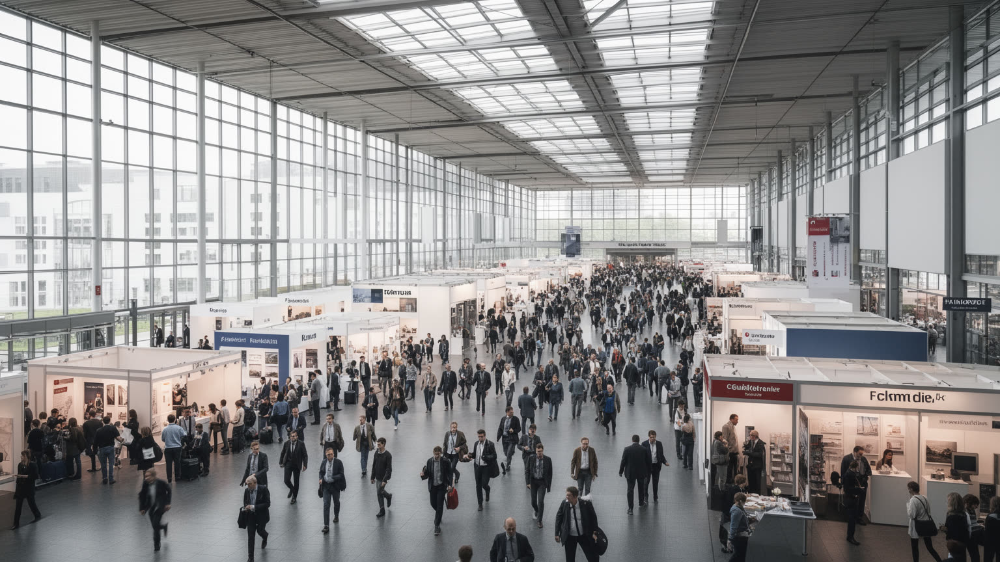
フランクフルトは古くから市が立つ交易の町で、現代でも見本市が都市の季節感を作ります。とりわけ書籍見本市の時期には、出版社、編集者、翻訳者、作家、書店員、映像化権を扱う人が集まり、中央駅、空港、ホテル、レストランの言語が一気に増えます。展示ホールの中では商談、取材、契約が進み、外では通訳、設営、清掃、警備、配送、印刷店、カフェが忙しくなります。Kleinmarkthalleでは客が果物、チーズ、ソーセージを買い、立ち飲みのワインやコーヒーを挟んで展示会帰りの会話が弾みます。Zeilの大型店や屋台では、買い物袋、焼き菓子、スマホ決済が会期の街歩きに混ざります。デジタル化が進んでも、実物を手に取り、相手の表情を見て、業界の温度を読む場の価値は残ります。書籍見本市では小さな出版社が翻訳権を探し、政治的に難しい国の作家が発言の場を求めます。学生や地元読者も公開イベントへ足を運び、専門商談だけで終わらない本の祝祭が街へ広がります。夜には編集者や翻訳者がザクセンハウゼンでリンゴ酒を囲み、商談の続きがくだけた会話に変わります。一方で会期中の宿泊費は上がり、短期労働の負担も重くなります。見本市を読むには、華やかなブースだけでなく、搬入口、撤収の夜、駅前の混雑、地元の店が引き受ける小さな仕事まで見なければなりません。交易は歴史の記憶であり、都市サービスを鍛える日常の実務です。
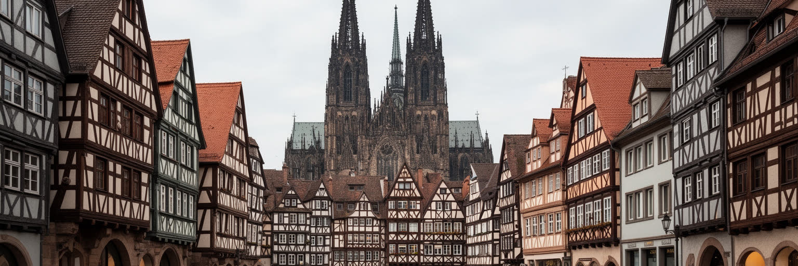
フランクフルトの旧市街は、古い町並みがそのまま残る場所ではありません。中世以来の交易、神聖ローマ皇帝の選挙と戴冠、ユダヤ人街の歴史、ゲーテの生家、戦災による破壊、戦後再建、近年の歴史的外観の復元が折り重なります。レーマー広場や大聖堂の周辺は写真を撮りたくなる中心ですが、木組みの外観の多くは、何を復元し、何を現代建築として残すかをめぐる選択の結果です。観光客は広場からZeilのショッピング街へ流れ、雨の日にはデパートやカフェに入り、パンの匂いと買い物袋の音が旧市街の記憶に重なります。心地よい景観だけを見れば、戦争、ナチズム、ユダヤ人迫害、空襲の痛みは薄れてしまいます。ユダヤ博物館や記念碑を訪れると、かわいらしい外観だけでは語れない断絶が見えてきます。ガイドツアーや学校の見学では、帝国都市の栄光だけでなく、迫害、追放、戦後の責任も同じ道順で学ばれます。降臨節の市が立つ季節には、菓子と香辛料の匂いが広場を満たし、祝祭と記憶の重さが同じ石畳に残ります。復元された街区のすぐ近くには戦後の道路や商業ビルもあり、都市は一つの時代に戻れるわけではありません。博物館、墓地、学校教育、地元メディアの議論まで合わせて、都市が過去をどう語るかを確かめる必要があります。旧市街は観光資源であると同時に、楽しさと記憶の重さを同じ中心部で引き受ける場所です。
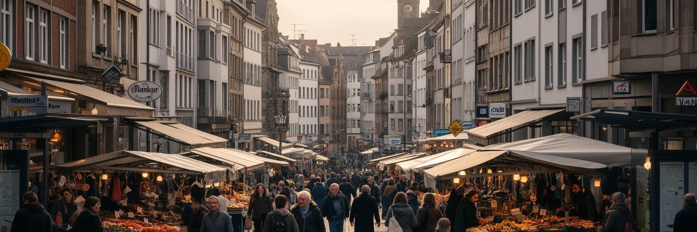
フランクフルトは移民の存在感が大きい都市です。中央駅周辺や商店街には、トルコ、中東、南アジア、東欧、アフリカ、イタリア、ギリシャ、旧ユーゴスラビア地域などに由来する食堂、食品店、理髪店、旅行会社、送金サービス、礼拝所が並びます。市場の香辛料、焼きたてのパン、コーヒー、ソーセージの匂いは、金融街の硬い印象をほどきます。Bahnhofsviertelには移民商店とバー、クラブ、深夜営業の店が集まる一方、薬物依存、性産業、路上生活、非公式な売買も見え、路上経済が国際金融都市の足元にあります。隠すだけでは医療、相談、住宅支援、治安の課題は解けません。学校帰りの子ども、買い物をする高齢者、夜勤へ向かう空港労働者、礼拝へ行く家族を同じ地図に置くと、多文化性は飾りではなく生活の制度です。行政の窓口、学校の言語支援、移民団体、宗教施設は、制度と近所付き合いの間を埋めます。雨の夕方に小さな食品店の軒先で交わされる会話には、仕事探し、家族の近況、次の送金の相談が混ざります。移民商店街は、孤立しがちな新着者に最初の手がかりを渡します。SNSの地域グループや多言語ラジオも、求人、住まい、書類、子育ての情報をつなぐ小さな地域拠点になっています。夜の店の明かりは不安も楽しさも照らし、都市の包摂力を路上で試します。
フランクフルトは金融都市であると同時に、書籍、大学、音楽の都市でもあります。国際書籍見本市は出版社、編集者、翻訳者、著者、書店、図書館、学術機関、映像化権を扱う企業を集め、どの言語の本が市場に届くかを可視化します。ゲーテ大学の学生は研究室、図書館、カフェ、クラブを行き来し、哲学、社会学、金融、移民研究、環境問題を日常の話題にします。会場の外では書店、新聞、ローカルメディア、批評、学校の読書教育が読書の層を支えます。夜になるとジャズの小さなライブ、電子音楽のクラブ、Bahnhofsviertelのバー、美術館岸の催しが、昼の金融街とは別の顔を見せます。Museumsuferfestでは川沿いに音楽、展示、屋台、家族連れが広がり、文化施設が屋外の街路とつながります。学生は安い席や深夜のイベントを探し、年配の観客は昔から通うホールや新聞の批評を手がかりに予定を組みます。コーヒーを片手に読まれる地元紙や文化ポッドキャストは、国際金融と近所の劇場評を同じ朝に届けます。本の会話はカフェや講義室にも残ります。出版文化は華やかな授賞式だけでなく、締め切り、契約、著作権、翻訳、流通、書店経営の積み重ねです。金融が数字の信用を動かすなら、出版は言葉の信用を動かします。資本と知識が近い場所で交渉されることが、この都市の静かな強みです。
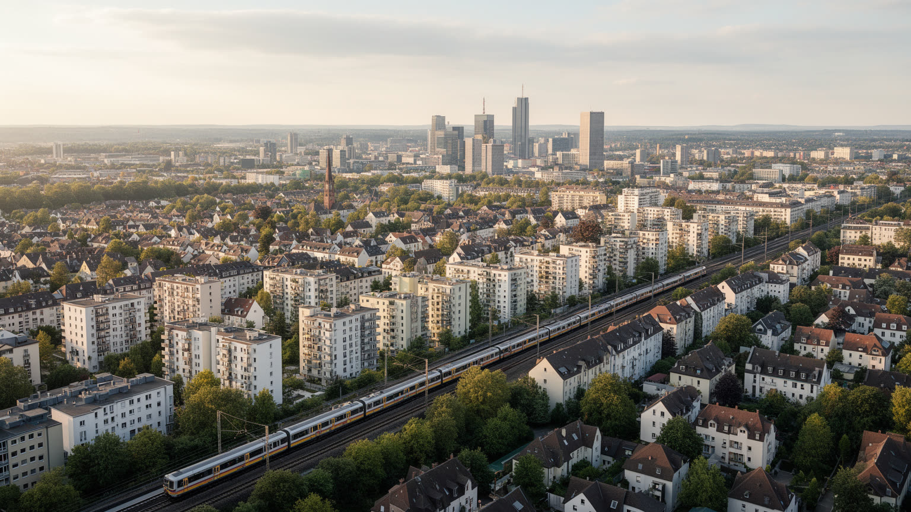
フランクフルトの生活は、市境の内側だけでは捉えられません。仕事は中心部、空港、見本市に集まる一方、住まいはオッフェンバッハ、ダルムシュタット、マインツ、ヴィースバーデン、ハーナウ、タウヌス方面まで広がり、Sバーンとトラムの音が毎日の時間を刻みます。高収入の金融職が住宅価格を押し上げるほど、学生、若い家族、低賃金労働者、単身高齢者は住む場所に悩みます。子どもの保育園、学校、医療、買い物、宗教施設、近所の公園は、家賃だけでは測れない生活条件です。雨の朝にベビーカーで停留所へ向かう親、買い物袋を持つ高齢者、夜勤明けの空港労働者、大学へ通う学生は、同じ交通網に頼っています。週末にはZeilで買い物を済ませ、Kleinmarkthalleで食材を選び、近所のパン屋で翌朝のパンを買うような小さな回遊も生活を形作ります。子どもの習い事、高齢者の通院、学生のアルバイト先まで、住宅の場所は一日の負担を変えます。朝のパン屋や薬局の近さは小さく見えても、子育てや介護のある世帯には大きな差になります。住宅問題を読むには、高層マンションの広告だけでなく、社会住宅、家賃規制、郊外電車の混雑、隣接自治体との土地利用調整を見る必要があります。都市の経済力は、働き、学び、育て、年を重ねる人が近くに住み続けられるかで試されます。
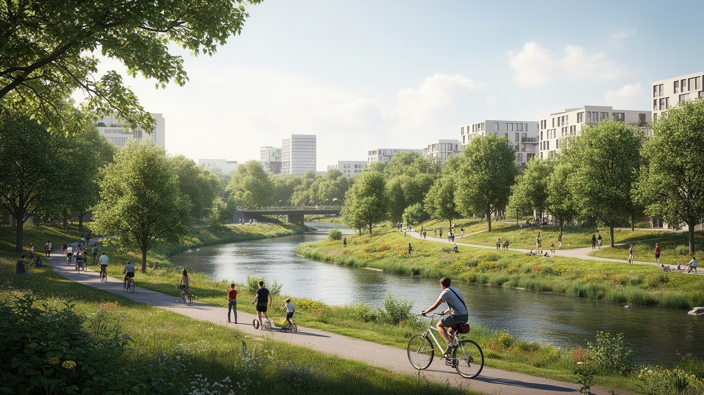
フランクフルトには高層ビルと空港の印象がありますが、都市を持続させているのは緑地、川辺、運動のネットワークでもあります。市の周囲には緑地環があり、森、畑、果樹園、川沿いの道、公園、スポーツ施設、自転車道が密な都市生活に余白を与えます。朝のマイン川沿いにはランナーと自転車が流れ、週末には子どもの遊び、学校の自然学習、リンゴ酒の店へ向かう散歩が重なります。アイントラハト・フランクフルトの試合日には、スタジアムへ向かうSバーンの声が街の熱を運び、勝敗の話題が酒場やパン屋にも広がります。緑地は景観の飾りではなく、暑さを和らげ、雨水を受け止め、住民の心身を支える社会インフラです。夏の暑い日には木陰の多さが高齢者や子どもの安全に関わり、強い雨の日には舗装面と緑地の差が水の流れに表れます。自転車で通勤する人にとっては、安全な車道、橋の傾斜、濡れた路面も都市の質を左右します。ランニングクラブや学校のスポーツ活動は、金融都市の硬さをほどく近所の習慣にもなっています。雨具を乾かすカフェの窓辺にも、川辺を使う都市の生活感があります。一方で住宅不足、空港拡張、道路整備は森や静けさと衝突します。どの地区に木陰が多く、誰が近くに緑を持ち、猛暑や雨の日にどこで休めるかを見ることが、環境と公平性を測る実務になります。
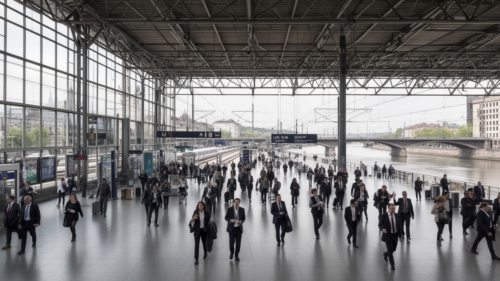
フランクフルトは国家儀礼の中心ではなく、欧州を日々動かす接続の都市です。中央駅から高速鉄道に乗れば、ケルン、ベルリン、ミュンヘン、パリ、ブリュッセル、バーゼル方面へ向かえ、空港は大陸間の移動を引き受けます。金融機関、欧州中央銀行、国際企業、法律事務所、見本市、大学、研究機関は、都市を制度と情報の結節点にしています。ここで交わされる送金、契約、貨物、翻訳、航空券、会議の予定は、欧州統合を日常の作業へ変えます。けれども便利さは混雑、航空依存、出張文化の環境負荷、国際競争による地価上昇も連れてきます。駅の構内ではブレーキ音、発車案内、雨に濡れたコート、コーヒーの湯気が混ざり、国際都市はかなり生活臭のある姿を見せます。欧州の危機が起きるたび、通貨、難民、エネルギー、制裁、航空網の課題はこの都市にも届きます。会議場の言葉はやがて家計、留学生の進路、移民家族の手続き、企業の採用へ移っていきます。トラムの停留所では英語、ドイツ語、トルコ語などが交差し、接続は大きな制度だけでなく耳に届く音でも分かります。空港の発着音と市電のベルは、遠距離と近距離の移動を同じ日に響かせます。国旗や機関名だけでなく、空港ホテル、国際学校、短期滞在者向け住宅、会議通訳、地方銀行の支店、地域の新聞まで含めると、接続の強さを支える足元が見えてきます。
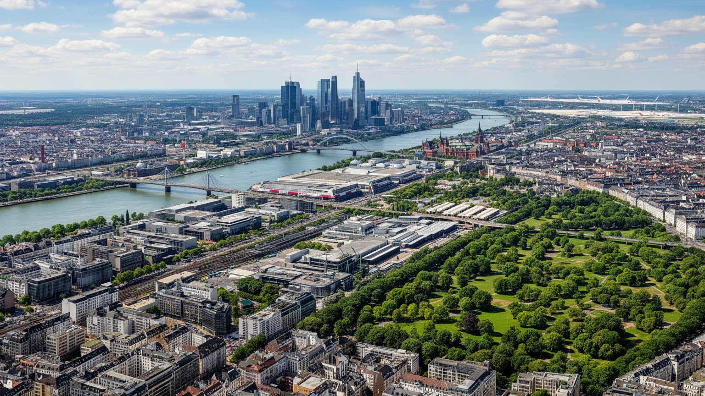
フランクフルトは、金融都市という一語では収まりません。マイン川の橋を渡れば、旧市街の再建、銀行街の高層ビル、美術館岸、ザクセンハウゼンのリンゴ酒酒場、Bahnhofsviertelの移民商店、空港へ向かうSバーンが短い距離でつながります。Museumsuferfestの夜には川沿いに音楽と屋台が並び、ジャズやクラブの低音、ソーセージの煙、リンゴ酒の香り、雨を含んだ川風が観光客と住民を混ぜます。Zeilで買い物をする家族、試合を語るアイントラハトのファン、大学の学生、介護施設へ向かう職員、学校帰りの子ども、買い物を急ぐ高齢者が同じ交通網を使います。欧州中央銀行や証券取引所は国際的な顔ですが、都市を支えるのは荷物を運ぶ人、店を開ける人、新聞を作る人、礼拝所を維持する人でもあります。観光客には歩きやすく見える中心部も、住民には家賃、学校、保育、騒音、夜の治安が絡む生活圏です。朝のコーヒー、雨に濡れた路面、試合後の歌声、路上で売られる食べ物まで、街の記憶は感覚として残ります。そこに書籍見本市の言葉、空港の発着音、川沿いのランナーが加わると、都市はさらに立体的に見えます。短い滞在でも、匂いと音を追うほど街の層が見えてきます。数字と匂い、制度と路上、空港の速度と川辺の休息を重ねると、この実務都市の強さと脆さが同時に見えてきます。